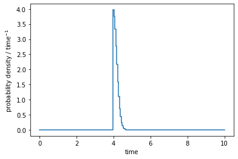

Example how-to create a signal time PDF
In this example we demonstrate how to create a signal time PDF with a gaussian shape.[1]:
import numpy as np
from matplotlib import (
pyplot as plt,
)
from skyllh.core.config import (
Config,
)
from skyllh.core.detsigyield import (
NullDetSigYieldBuilder,
)
from skyllh.core.flux_model import (
GaussianTimeFluxProfile,
NullFluxModel,
)
from skyllh.core.livetime import (
Livetime,
)
from skyllh.core.parameters import (
ParameterModelMapper,
)
from skyllh.core.signalpdf import (
SignalTimePDF,
)
from skyllh.core.source_hypo_grouping import (
SourceHypoGroup,
SourceHypoGroupManager,
)
from skyllh.core.source_model import (
SourceModel,
)
from skyllh.core.storage import (
DataFieldRecordArray,
)
from skyllh.core.trialdata import (
TrialDataManager,
)
The SignalTimePDF class provides a
generalized time PDF class, which requires a
Livetime instance and a
TimeFluxProfile instance.
[2]:
cfg = Config()
[3]:
livetime_data = np.array([
[1, 3],
[4, 7],
[8, 9],
],
dtype=np.float64)
livetime = Livetime(livetime_data)
Now we can construct the time flux profile. We choose a gaussian profile.
Other profiles exist as well, e.g. the
BoxTimeFluxProfile.
[4]:
time_flux_profile = GaussianTimeFluxProfile(t0=4, sigma_t=0.2, cfg=cfg)
[5]:
print(f't_start = {time_flux_profile.t_start}')
print(f't_stop = {time_flux_profile.t_stop}')
t_start = 2.5132311244600647
t_stop = 5.486768875539935
Finally, we can construct the SignalTimePDF
instance:
[6]:
sigpdf = SignalTimePDF(
livetime=livetime,
time_flux_profile=time_flux_profile,
cfg=cfg)
In order to evaluate our time PDF, we need to create some SkyLLH framework
infrastructure first. The get_pd() method requires
a TrialDataManager instance, which we create
now. We initialize the trial data manager with trial data containing the
time values we want to evaluate.
[7]:
shg_mgr = SourceHypoGroupManager(
SourceHypoGroup(
sources=SourceModel(),
fluxmodel=NullFluxModel(),
detsigyield_builders=NullDetSigYieldBuilder())
)
pmm = ParameterModelMapper(
models=shg_mgr.source_list)
t = np.linspace(0, 10, int(10/0.05))
events = DataFieldRecordArray(np.array(t, dtype=[('time', np.float64)]))
tdm = TrialDataManager()
tdm.initialize_trial(
shg_mgr=shg_mgr,
pmm=pmm,
events=events)
[8]:
sigpdf.initialize_for_new_trial(tdm=tdm)
[9]:
(pd, grads) = sigpdf.get_pd(
tdm=tdm,
params_recarray=pmm.create_src_params_recarray())
[10]:
total_integral = np.sum(pd[1:]*np.diff(t))
print(f'total integral = {total_integral}')
total integral = 1.0200980782124147
[11]:
fig = plt.figure(figsize=(6, 4))
ax = fig.add_subplot()
ax.plot(t, pd, drawstyle='steps')
ax.set_xlabel('time')
ax.set_ylabel(r'probability density / time$^{-1}$')
[11]:
Text(0, 0.5, 'probability density / time$^{-1}$')
